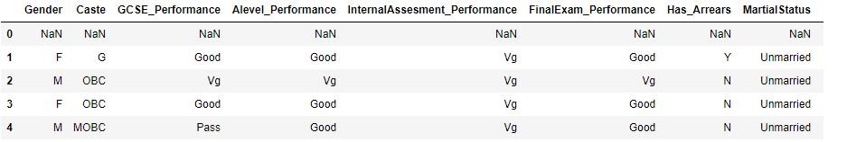
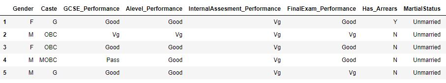

The Dataset
The dataset being analysed for the purpose of
this report website consisted of 22 attributes
and 131 student entries.
Below is an example of the head of the Dataset.

Figure 1.1
Missing Data
When first importing the dataset it is important to have a look at
what cleaning is required before performing any analysis.
In viewing the head of the dataset (Figure 1.1) it became apparent that
the first row had not been used and was showing only NaN values.
To overcome this issue I dropped any row that contained only NaN values.
Now the head of the data only contains
actual values (Figure 1.2).

Figure 1.2
The final check was to perform a count of any missing values
within the data set dataframe.isna().sum().
The output from
this is displayed in Table 1.3 below. This is showing no missing values
so plotting can begin.
| Column Name | Number of Null Values |
|---|---|
| Gender | 0 |
| Caste | 0 |
| GCSE_Performance | 0 |
| Alevel_Performance | 0 |
| InternalAssesment_Performance | 0 |
| FinalExam_Performance | 0 |
| Has_Arrears | 0 |
| MartialStatus | 0 |
| TownOrVillage | 0 |
| Admission_Category | 0 |
| FamilyMonthlyIncome | 0 |
| Family_Size | 0 |
| Father_Qualifications | 0 |
| Mother_Qualifications | 0 |
| Father_Occupation | 0 |
| Mother_Occupation | 0 |
| Number_of_friends | 0 |
| Study_Hours | 0 |
| School_Type | 0 |
| Language | 0 |
| College_Traveltime | 0 |
| Class_Attendance | 0 |
Table 1.3